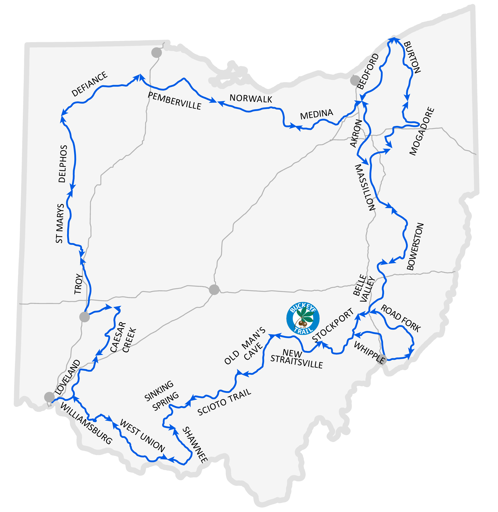
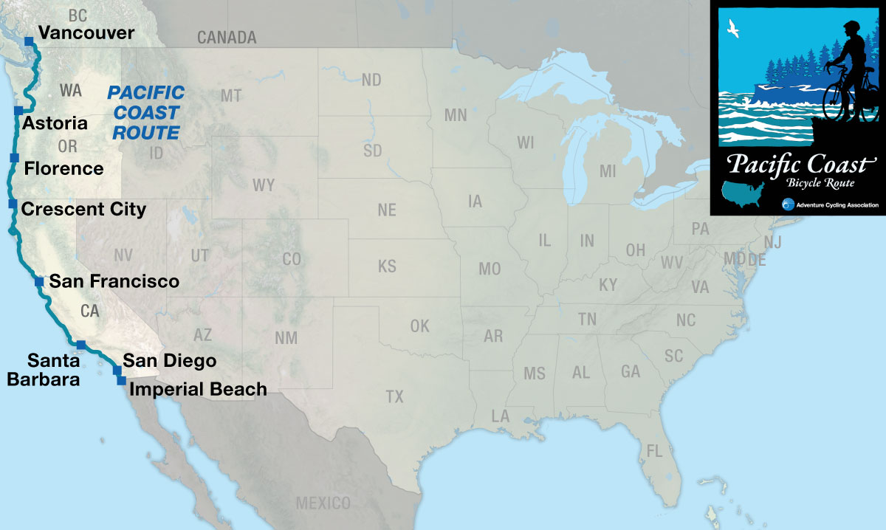
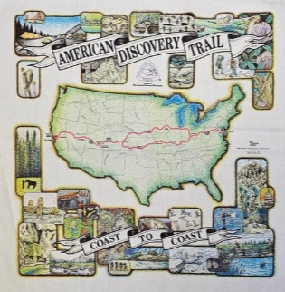

Outside of Work
While I do like to tinker, build, and write code outside of work, I also very much enjoy my time away from these things. It is good to turn off all the technology and get away from screens. When I have the time, I enjoy most outdoor activities. My top three hobbies are trail running, cycling, and hiking. I also enjoy kayaking, camping, and reading.
Adventure Bucket List
There are many hiking and cycling trails across America that I would like to do. They can each take weeks or months to trek through end-to-end so it may be a lofty goal to get through them all, but I would really like to:
- Hike the Buckeye Trail
- Hike the Pacific Crest Trail
- Cycle the Pacific Coast Bicycle Route
- Hike/Cycle the American Discovery Trail
- Complete a 100 mile trail run


